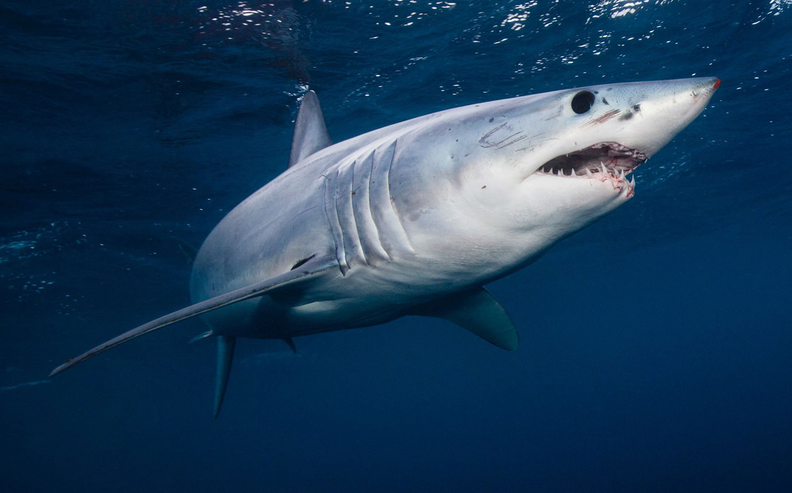

Shark Org
Great White Shark

The great white shark, also known as the white shark, white pointer, or simply great white, is a species of large mackerel shark which can be found in the coastal surface waters of all the major oceans.
Shortfin Mako

The shortfin mako shark, also known as the blue pointer or bonito shark, is a large mackerel shark. It is commonly referred to as the mako shark, as is the longfin mako shark. The shortfin mako can reach a size of 4 m (13 ft) in length. The species is classified as Endangered by the IUCN.